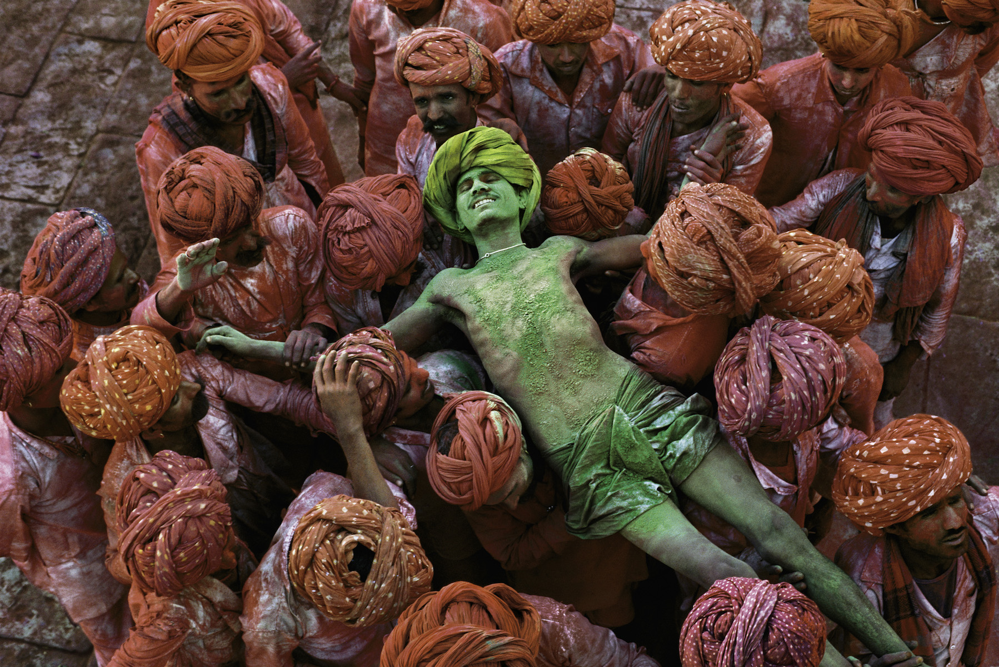
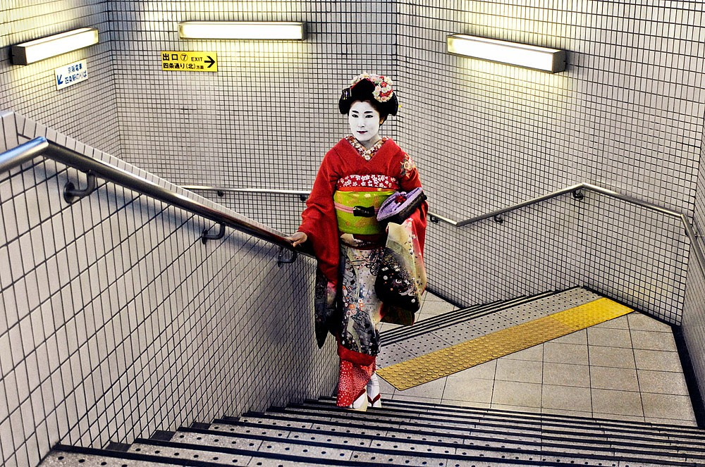
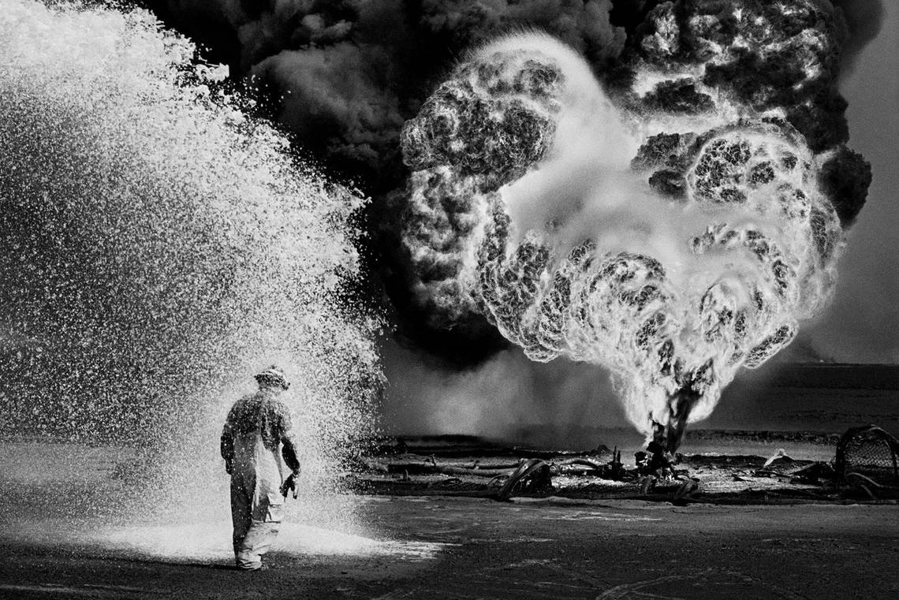
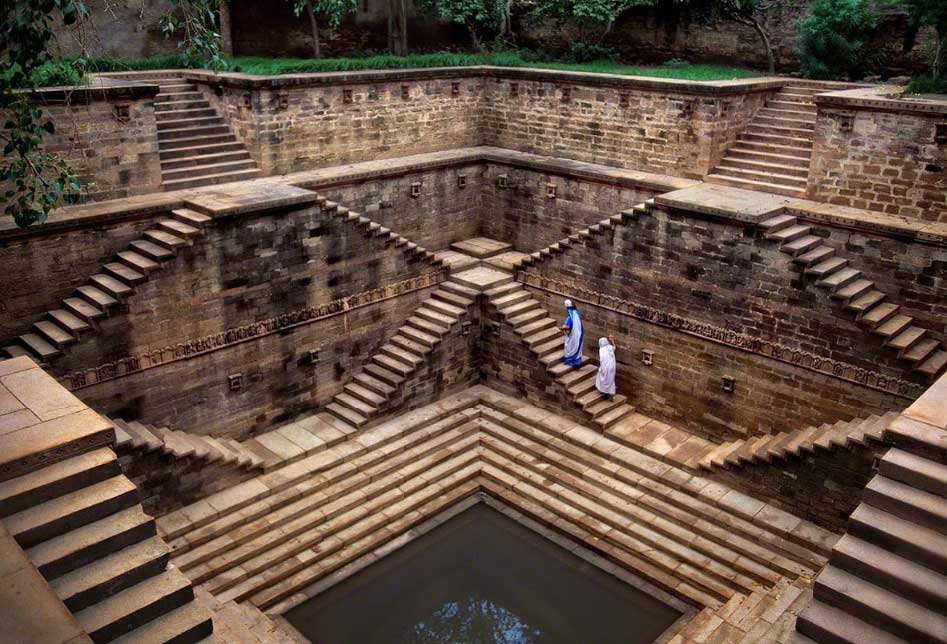
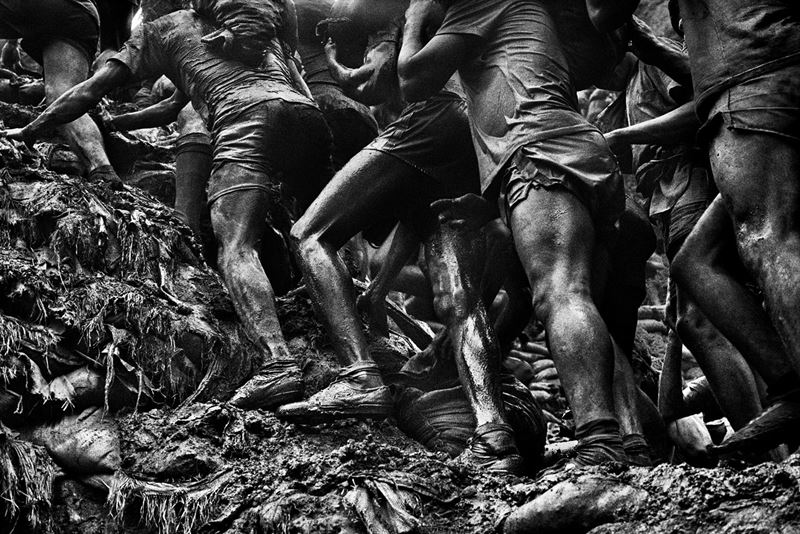
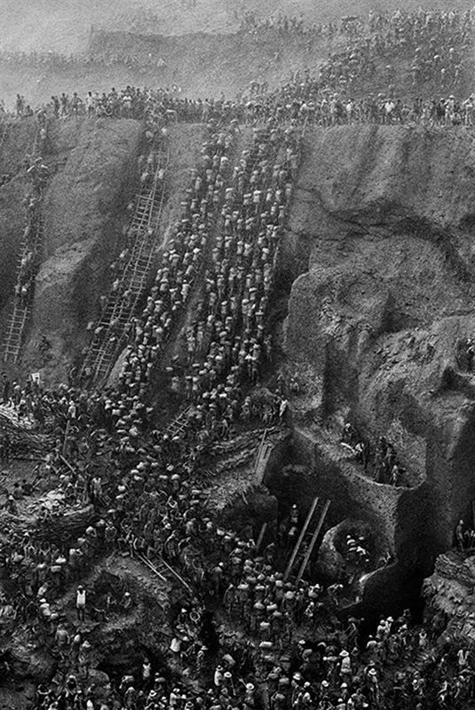
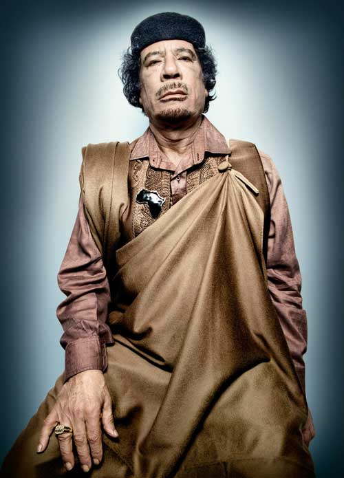
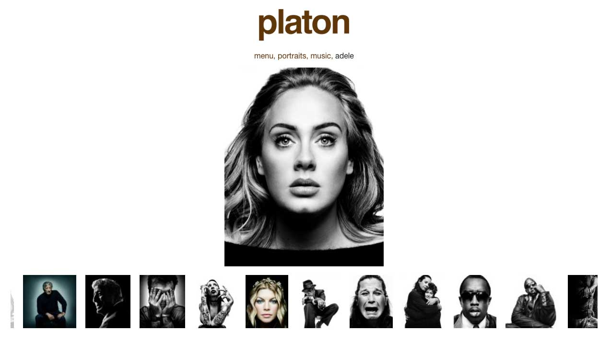

1. Contrast: color and themes

Steve McCurry - Rajasthan, India, 1996.

Steve McCurry. Geisha in subway - Kyoto, Japan, 2007.
Ashima Narain - Hola Mohalla Sikh festival, 2017.

Sebastião Salgado – Greater Burhan Oil Field - Kuwait, 1991
2. Use of shapes/geometry
Sarah Waiswa - Portraits series

Steve McCurry - Women in a step well, Rajasthan, India, 2002
3. Point of view

Sebastião Salgado - The Gold Mine, Brazil, 1986.

Sebastião Salgado - The Gold Mine, Brazil, 1986.
4. Faces
Platon photography - Vladimir Putin.
Platon photography - Bill Clinton.
Platon photography - Sonia Sotomayor.

Platon photography - Muammar Gaddafi.
Platon photography - Michelle Bachelet.

platonphoto.com
Let's jump to editing and optimizing